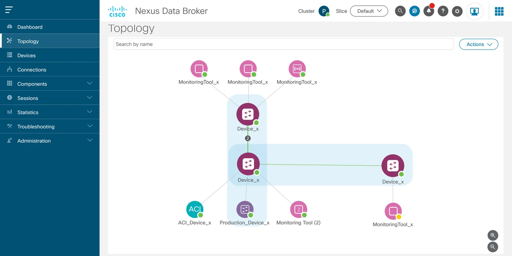
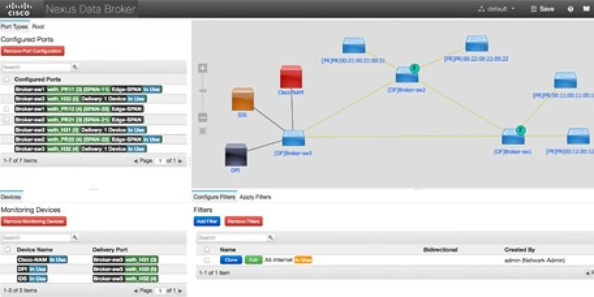
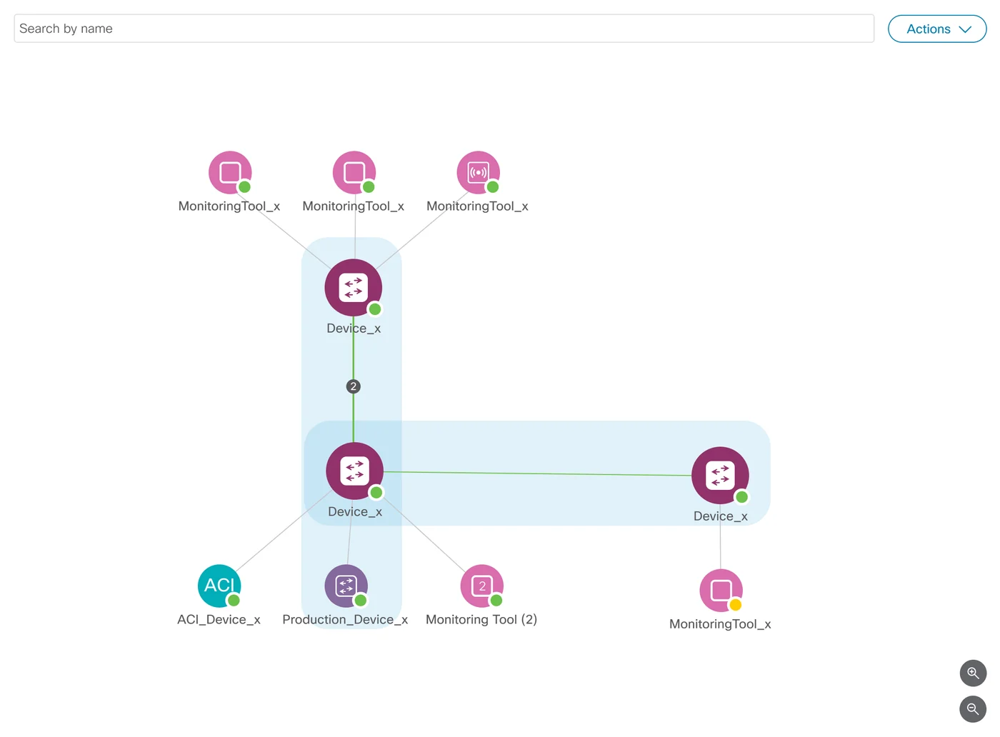

The Challenge
Rebuild a deep routing product on a new platform in 2.5 months
Nexus Dashboard Data Broker routes network traffic from source ports, through filters, to monitoring tools. The old app exposed nearly all of that logic through dense configuration forms and a topology map you could look at but not work in.
The team had no designer allocated, so I came in to help as the only designer. My job was to turn that routing logic into workflows operators could follow, and to move the app onto the unified Nexus Dashboard platform.
I worked closely with technical marketing and engineering to give each data stream a clear mental model. Reusing the platform’s design system kept our time on the real problem: deep backend constraints versus operators who need speed every day.
The Whole Brief Was “Improve the UI”
Before drawing anything, we had to agree on what the product actually did.
No Access to the Operators Using It
Deployment security kept us away from enterprise operators. Tech Marketing became our check on domain logic.
A One Month Estimate
The first estimate was one month, set before anyone knew the scope. The real job was a full move onto the Nexus Dashboard framework.
Discovery
Before changing anything, we wrote down what the old tool did
The brief was loose, so I started with an inventory. I sat down with engineering, technical marketing and product leadership and listed what the existing system did, area by area: configured ports, topology, monitoring devices, filters. One rule: no critical workflow disappears in the redesign.
That list let us modernize the look and keep full feature parity. It also showed us where the biggest win was: the topology map. Common tasks that used to take a trip through several pages could happen on one screen.
The previous app
Mapped together
- Engineering
- Tech Marketing
- Product leadership
Feature parity
- Port configuration
- Topology map
- Monitoring devices
- Filters
Ideation
One framework for every page, then nine wireframes
With no operators to talk to, I worked from the core use cases and system constraints across the Nexus Dashboard suite, and leaned on Tech Marketing to check the domain logic. That became one product framework covering every page and object in the app.
Then came structural wireframes and rounds of prototyping with engineering. Each round flattened the layout hierarchy a little more, so administrators could get through dense data without getting stuck.
Information architecture: every page and object in the app
Key Screens
Health, topology and setup, rebuilt
Previous to Redesign
The topology view, before and after. Drag the handle to compare.


One Place to Check System Health
Operators had no single view of system health. I designed a dashboard that puts live traffic statistics, node status and component utilization on one screen.
Each panel is built to point at what to do next, not just report a number. Less time goes into hunting for the cause of a problem.
From a Static Map to a Canvas You Configure In
The old topology map was static. Changing a node meant leaving it for a separate configuration page.
I proposed an interactive canvas, and the tech marketing manager said it was exactly what he had been thinking. Administrators select a node, see its live status and configure it in place, on one screen instead of several pages.
Hover or tap a feature to see it on the map

Setup You Shape Instead of Fill In
Setup used to be text boxes and dropdowns, one after another. For the hard choices, like picking edge ports or building a connection from source to filter to monitoring tool, I swapped the fields for visual components.
You can see a whole connection at a glance, so setup goes faster with fewer mistakes.
Built on the Platform
Every page now runs on the Nexus Dashboard design system
I restructured the app’s pages to fit fully inside the Nexus Dashboard platform and built them from its design system components.
Pages look and behave the same way everywhere, each one is easier to use, and the team has a reusable base for future platform updates.
What Changed
Before: A static map, with configuration on separate pages
After: An interactive canvas where you inspect and configure nodes in place
Before: No view for health or traffic
After: A dashboard with live traffic, node status and utilization on one screen
Before: Text boxes and dropdowns, one field at a time
After: Visual components for complex selections, with fewer errors
Before: Pages outside the Nexus Dashboard framework
After: Pages built from its design system components
Map what the system does first. Then make it visible.
Data Broker Now Lives Inside Nexus Dashboard
I was moved to a different project before it shipped. From what I heard, operators got tasks done more easily and found their resources and configuration without hunting. The bigger win was the platform move itself.
The engineering team was in India, so most of our alignment happened across time zones. The interface patterns I set fixed pressing usability problems and gave the team a framework for later updates.